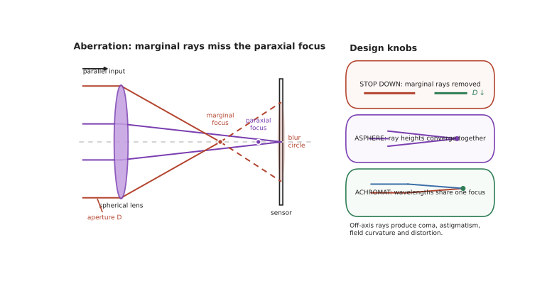

本页目录
光学 II · 像差与光学系统设计
层次：本科核心 + 研究生/业界专门方向（光学设计师是一个独立职业）。 上一页的成像公式建立在近轴近似（\(\sin\theta \approx \theta\)）之上。真实系统中光线角度不小，光线不再精确交于一点——这就是像差。校正像差的历史几乎就是光学工业的历史，也是光学设计这门手艺的核心。
学习层：把“收小光圈更清楚”拆成两种误差
1. 具体谜题：最佳光圈为什么不会无限小？
一枚焦距 \(f=50\,\mathrm{mm}\) 的球面镜头，边缘光线带来的球差弥散半径可用 \(aN^3\) 估计，其中 \(N=D/f\)、\(a=0.20\,\mathrm{mm}\)；衍射斑半径用 \(b/N\) 估计，其中 \(b=0.004\,\mathrm{mm}\)。请先判断把相对孔径 \(N\) 从 \(0.20\) 收到 \(0.10\) 后，哪种误差下降更快，以及是否应该继续收小到 \(N=0.01\)。这不是“镜片做坏了”的谜题，而是三阶像差与波动极限的竞赛。
2. 先预测：哪个误差会随孔径翻倍？
先写下预测：① 孔径加倍时球差项 \(\propto D^3\) 变化几倍；② 彗差依赖孔径和视场，收光圈能不能把轴外彗差完全消掉；③ 一个畸变很大的镜头经软件校正后，点的清晰度和点的位置是否同时恢复；④ 若两个设计的标称 RMS 一样，公差更小的那个是否更适合量产。再移动光阑位置，观察“像差类型”与“像差预算”是不是同一个问题。
3. 最小 mental model：理想项加误差项
把真实光线在像面的偏差写成 \(\Delta(\rho,\phi,h,\lambda)\)：\(\rho\) 是归一化孔径坐标，\(h\) 是视场高度。近轴项让所有光线指向同一像点；三阶展开把偏差分成随 \(\rho\)、\(h\) 不同幂次增长的模式。一个设计不是让每个模式都为零，而是在孔径、视场、波长、制造公差和成本之间分配有限的误差预算。
4. 正式机制：三阶标度、Petzval 与色差抵消
球差的主导量级为 \(W_{040}\propto \rho^4\)，像面横向误差常呈 \(\rho^3\) 标度；彗差常呈 \(\rho^2h\)，像散与场曲分别含 \(\rho h^2\)、\(h^2\)，畸变含 \(h^3\)。收小光圈让高阶孔径项迅速变小，但不改变纯视场项的根源。
平场需要满足 Petzval 和的近似条件
而消色差用不同阿贝数的玻璃让
这些等式是约束，不是自动生成的“好镜头”按钮；改变一个曲率可能同时改变球差、色差和后焦距。
5. 静态实验：像差预算与设计选择
无 JavaScript 时的静态读法：固定系数下，三档相对孔径 \(N\) 的预算如下：
| \(N=D/f\) | 球差 \(0.20N^3\) mm | 衍射 \(0.004/N\) mm | 合计 | 读法 |
|---|---|---|---|---|
| 0.20 | 0.00160 | 0.02000 | 0.02160 | 衍射主导 |
| 0.10 | 0.00020 | 0.04000 | 0.04020 | 收光圈已过最佳点 |
| 0.2857 | 0.004666 | 0.01400 | 0.01866 | 合计最小（近似） |
对 \(E(N)=aN^3+b/N\) 令导数为零可得 \(N_*=(b/(3a))^{1/4}\approx0.2857\)；两项相等并不等于合计最小。 这里的合计是教学用的正值预算，不把相位抵消假装成线性相加。脚本可切换球差主导、平场优先和色差优先三种固定设计，拖动孔径、视场和公差，查看五类误差的标度、软件可校正的畸变项，以及设计均值与 95% 公差带；先回答“收小还是停下”，再揭示曲线。
6. 反例与边界：零像差不是一个单一目标
- 小光圈不等于无限清晰。 球差可以按孔径幂次下降，但衍射斑按 \(1/N\) 增大，存在最佳光圈；把“更小”当成“更好”会越过平衡点。
- 畸变与清晰度不同。 畸变主要移动像点，软件可按标定模型重映射；彗差、像散和球差改变点扩散形状，插值不能凭空恢复丢失的细节。
- 轴上标称值不代表全视场。 只优化一个物距、一个波长和一个视场点，可能让边缘场曲、横向色差或彗差失控。
- 公差会改写排序。 非球面或特殊玻璃可能降低标称 RMS，却对偏心、倾斜和面形误差更敏感；量产要看性能分布，不是单个最优样机。
7. 迁移题：写出一份可制造的评价函数
为手机镜头或显微物镜选三个视场点、两种波长和三档孔径，给球差、色差、MTF 和装调敏感度分配权重。哪一个指标可以交给 ISP，哪一个必须在玻璃和光阑位置上解决？请构造一个“标称稍差但公差带更窄”的候选，并说明为什么它的量产良率可能更高。

一、像差从哪来
把 \(\sin\theta\) 展开：
- 保留一次项 → 近轴光学（理想成像）；
- 保留三次项 → 三阶像差（Seidel 像差），即经典的五种单色像差；
- 更高阶 → 高级像差，大孔径大视场系统必须考虑。
所以像差不是"制造缺陷"，而是几何本身的必然结果——即使加工完美，球面透镜也不能完美成像。 这一点常被误解。
二、五种单色像差（Seidel）
| 像差 | 现象 | 依赖 | 典型对策 |
|---|---|---|---|
| 球差 | 边缘光线与近轴光线焦点不同 | 孔径³ | 非球面、透镜组合、收小光圈 |
| 彗差 | 轴外点成彗星状拖尾 | 孔径²×视场 | 对称结构、光阑位置 |
| 像散 | 子午与弧矢焦线分离 | 孔径×视场² | 弯月透镜、场镜 |
| 场曲 | 像面是弯曲的 | 视场² | Petzval 条件、场平坦化 |
| 畸变 | 形状失真（桶形/枕形） | 视场³ | 对称结构、软件校正 |
几个重要的工程认识：
① 球差与孔径的三次方成正比 → 收小光圈能显著改善画质，这是摄影常识的物理根源。但收小到一定程度后，衍射极限开始主导（第四页），画质反而下降——存在一个最佳光圈。
② 场曲由 Petzval 和决定：
要平场，必须有负透镜参与。这是"为什么好镜头必须多片、且有正有负"的根本原因之一——不是厂商想卖贵，而是数学上必需。
③ 畸变不损失清晰度，只改变几何 → 它是唯一可以用软件完美校正的像差。现代手机镜头正是利用这一点：故意允许较大畸变以换取其他像差的校正与体积的缩小，再由 ISP 实时校正。这是"光学 + 计算"分工的最早、也最成功的例子（第十一页会展开）。
三、色差
折射率随波长变化（色散） → 不同颜色焦点不同。
- 纵向色差：不同波长焦点前后不同；
- 横向色差（倍率色差）：不同波长放大率不同 → 边缘出现彩边。
消色差（achromat）：用正冕牌 + 负火石两片胶合，使两个波长（通常 F、C 线）共焦。
原理：两片玻璃的色散不同（阿贝数 \(V_d\) 不同），可以让焦距相等而色散相消：
复消色差（apochromat）：三个波长共焦，需要特殊色散玻璃（ED、萤石）——这正是高端镜头昂贵的主要原因之一。
反射镜完全没有色差 → 大型天文望远镜与部分光刻系统采用反射式（🔗 微电子站：EUV 因所有材料吸收，只能全反射式）。
四、光学设计：一个优化问题
现代光学设计的本质是数值优化：
- 变量：曲率半径、厚度、间隔、玻璃牌号（离散！）、非球面系数；
- 目标（评价函数）：各视场、各波长、各孔径的光线偏差加权平方和，或直接优化 MTF；
- 约束：焦距、后工作距、外形尺寸、可加工性、成本、公差敏感度；
- 方法：阻尼最小二乘（DLS）为主 + 全局搜索。
这是一个典型的非凸优化问题（🔗 grad-math），存在大量局部极小。所以光学设计师的核心技能不是"会点软件"，而是：
- 选对初始结构（从经典结构出发：双高斯、库克三片、Petzval…）；
- 理解各像差之间的平衡关系（消一个往往激起另一个）；
- 判断何时该加一片透镜、改玻璃、还是引入非球面。
这与 🔗 微电子站的模拟电路设计极其相似——都是"低维但高度耦合的非凸设计空间，依赖经验与拓扑选择，难以完全自动化"。两个行业的资深设计师都同样稀缺。
五、公差与装调：设计之外的一半
这是学校讲得最少、工业上最要命的部分。
一个在软件中完美的设计，若对元件偏心、倾斜、间隔误差、面形误差、折射率批次波动过于敏感，就无法量产。
公差分析（蒙特卡洛为主）给出：在给定加工与装配公差下，成品性能的分布（承 🔗 机械站第十五、十六页的统计思想）。
关键判断：设计时就要为公差留裕度。有经验的设计师会主动牺牲一点标称性能，换取对公差的不敏感——因为"标称最优但装不出来"的设计毫无价值。这与机械站"能松则松"、微电子站"可制造性先于优雅"是完全同一种工程成熟度。
装调：干涉仪检测面形、自准直仪对轴、主动补偿。高端光学系统（光刻物镜、空间望远镜）的装调本身就是一门极高门槛的技艺，且往往是良率与成本的决定环节。
六、非球面与自由曲面
- 非球面：一个非球面可替代多片球面，显著减小体积重量。手机镜头全部是塑料非球面（模压成型，成本极低）；玻璃非球面则需精密模压或磨抛，成本高；
- 自由曲面：无旋转对称性，用于 AR/VR 光学、离轴系统、汽车照明。设计与检测难度都大幅上升——"能设计出来但测不出来"是自由曲面的现实瓶颈；
- 衍射光学元件（DOE）：利用衍射而非折射，色散符号与折射相反 → 可与折射元件配合做消色差（"混合光学"），且极轻薄。缺点是有衍射级次杂散光。
七、要点
- 像差是几何必然，不是加工缺陷；三阶展开给出五种单色像差；
- 球差 ∝ 孔径³ 解释了收小光圈的效果，但受衍射极限限制存在最佳光圈；
- 平场需要负透镜（Petzval 条件）——好镜头必须多片有正有负；
- 畸变可由软件完美校正，这是"光学+计算"分工的起点；
- 消色差靠两种色散不同的玻璃；反射系统无色差；
- 光学设计是非凸优化，初始结构与经验决定成败，与模拟电路设计同构；
- 公差不敏感性比标称性能更重要——装不出来的设计等于不存在。
下一页：换一副眼镜看光。把光当作波，立刻得到几何光学永远给不出的东西：干涉、相干性，以及精密测量的基础。